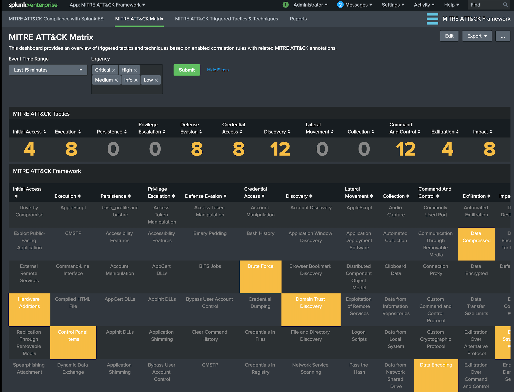
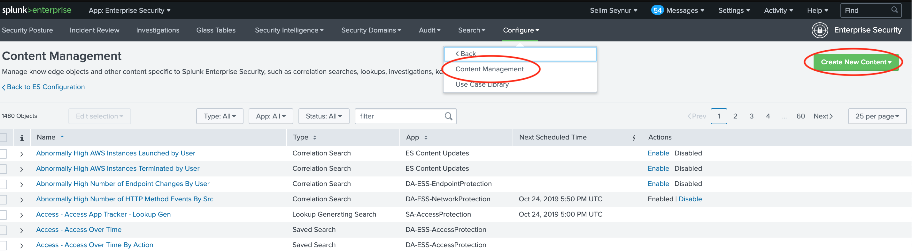
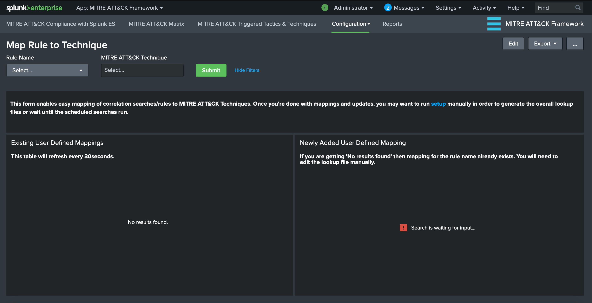
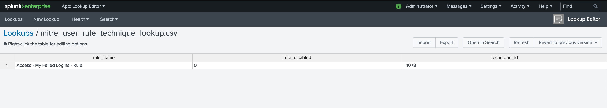

MITRE ATT&CK App for Splunk® - Documentation
This guide will provide description for the views that comes with this application and steps on how to create additional correlation searches.
Each cell containing a technique is colored based on the percentage of enabled correlation searches.
If there isn’t any related correlation searches, the cell is left uncolored.
If there are available correlation searches within Enterprise Security (and ESCU), then cells are colored based on percentage of enabled/active ones.
Currently the ranges are set as follows:
You can mouse over to the cells that contain techniques in order to view the number of available and enabled correlation rules that are specific to that technique.

This dashboard/form has filtering options based on “Event Time Range” and “Urgency” level of Notable Events. It provides and overview of triggered techniques within MITRE ATT&CK Matrix colored according to the “Urgency” level of Notable Events.
You can click on the triggered technique which provides the drill-down functionality and opens up Enterprise Security App Incident Review view for further analysis/investigation.

This dashboard/form provides an overview of triggered rules based on MITRE ATT&CK Tactics and Notable assets/identities. This is an effort to provide a better visibility for a notable asset/identity journey through MITRE ATT&CK Framework. The number of triggered Notable Events according to MITRE ATT&CK techniques are aggregated by Notable Assets where notable_asset is populated by src, dest or user from related Data Models.
Currently following panels are available:

There are 2 ways to accomplish this task.
mitre_user_rule_technique_lookup.csv file.The view in the application utilized Analytic Stories that are tagged with the Correlation Searches. Hence, in order to associate a Correlation Search with MITRE ATT&CK Techniques, you will need to create a new Analytic Story and add your Correlation Search with the appropriate tags.
Note: Please go to Splunk Documentation on How to create a Correlation Search
For example, if we want the Correlation Search “Brute Force Access Behavior Detected” to be associated with “Brute Force” Technique under “Credential Access” tactic, we need to perform the following steps:
Go to “Configure –> Content –> Content Management” from Enterprise Security Application menu. Click on “Create New Content” and select “Analytic Story”

Enter a Name and fill other details as necessary for this analytic story. Click on “Add Search” and select “Brute Force Access Behavior Detected”


Enter detection for Type field and under Annotations enter mitre_attack for Name and Brute Force for Mappings (this should match the technique)

Click Save to save the Analytic Story with annotation and mapping with the defined correlation search. You can add many correlation searches under one analytic story with defined mappings.
Once saved, the correlation search will populate both the Compliance and Triggered Techniques dashboards.
Each correlation rule is associated with 1 or more technique IDs. For a given correlation rule you if you simply want to add the technique ID(s), then you have 2 choices:
Utilize Map Rule to Technique views
OR
Edit mitre_user_rule_technique_lookup.csv directly.
NOTE: The scheduled searches combine this lookup along with analytic stories and checks against existing saved/correlation searches in order to create mitre_all_rule_technique_lookup.csv, which is used within the app.
(1) Utilize Map Rule to Technique views
a. Go to “Configuration –> Map Rule to Technique” from MITRE ATT&CK Framework App menu. Initially it should appear something similar to following image.

Panel Descriptions:
Existing User Defined Mappings: This panel displays the contents of user defined mappings and refreshed every 30 seconds to display updates.
Newly Added User Defined Mapping: This panel displays the newly selected rule-to-technique mapping which is added to the lookup table.
b. Next, select the rule name form Rule Name dropdown menu item and associate with technique IDs from MITRE ATT&CK Technique multi-select then hit Submit. Both panels will be updated accordingly.

Important NOTE: If a rule name is already defined, this view does NOT add any mappings to the lookup in order to avoid duplicates. You will see No results found message and will need to edit the lookup table manually.
(2) Edit mitre_user_rule_technique_lookup.csv directly.
You can edit the csv directly or utilize Lookup Editor app from web interface.

The lookup file expects 2 fields:
rule_name : The rule name as it appears in savedsearches.conf (e.g. “Access - Excessive Failed Logins - Rule”)technique_id : MITRE ATT&CK Technique ID (e.g. T1078 for Valid Accounts) list separated by spaces